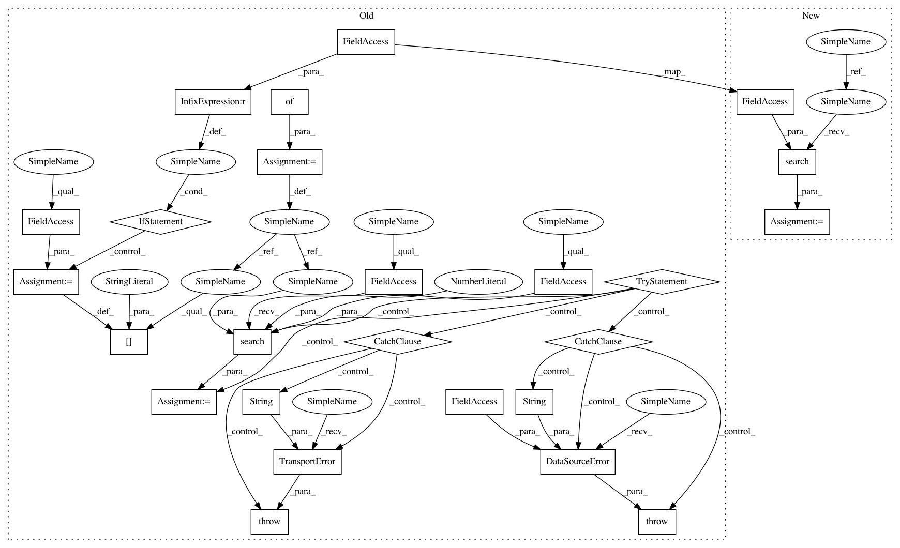

a5401913782d124b6d1d2f0cd39cdbfa8226b9af,loudml-elastic/loudml/elastic.py,ElasticsearchDataSource,get_times_data,#ElasticsearchDataSource#Any#Any#Any#,602
Before Change
):
features = model.features
es_params={}
if model.routing is not None:
es_params["routing"] = model.routing
from_ms, to_ms = _date_range_to_ms(from_date, to_date)
body = self._build_times_query(
model,
from_ms=from_ms,
to_ms=to_ms,
)
try:
es_res = self.es.search(
index=self.index,
size=0,
body=body,
params=es_params,
)
except elasticsearch.exceptions.TransportError as exn:
raise errors.TransportError(str(exn))
except urllib3.exceptions.HTTPError as exn:
raise errors.DataSourceError(self.name, str(exn))
hits = es_res["hits"]["total"]
if hits == 0:
logging.info("Aggregations for model %s: Missing data", model.name)
return
After Change
return agg_val
def get_times_data(
self,
model,
from_date=None,
to_date=None,
):
features = model.features
from_ms, to_ms = _date_range_to_ms(from_date, to_date)
body = self._build_times_query(
model,
from_ms=from_ms,
to_ms=to_ms,
)
es_res = self.search(
body,
routing=model.routing,
)
hits = es_res["hits"]["total"]
if hits == 0:
logging.info("Aggregations for model %s: Missing data", model.name)
In pattern: SUPERPATTERN
Frequency: 3
Non-data size: 25
Instances
Project Name: regel/loudml
Commit Name: a5401913782d124b6d1d2f0cd39cdbfa8226b9af
Time: 2018-05-25
Author: vianney@redmintnetwork.fr
File Name: loudml-elastic/loudml/elastic.py
Class Name: ElasticsearchDataSource
Method Name: get_times_data
Project Name: regel/loudml
Commit Name: a5401913782d124b6d1d2f0cd39cdbfa8226b9af
Time: 2018-05-25
Author: vianney@redmintnetwork.fr
File Name: loudml-elastic/loudml/elastic.py
Class Name: ElasticsearchDataSource
Method Name: get_quadrant_data
Project Name: regel/loudml
Commit Name: a5401913782d124b6d1d2f0cd39cdbfa8226b9af
Time: 2018-05-25
Author: vianney@redmintnetwork.fr
File Name: loudml-elastic/loudml/elastic.py
Class Name: ElasticsearchDataSource
Method Name: get_field_cardinality